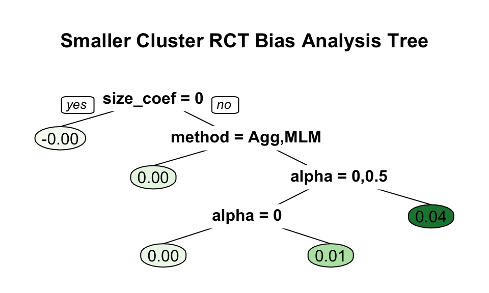
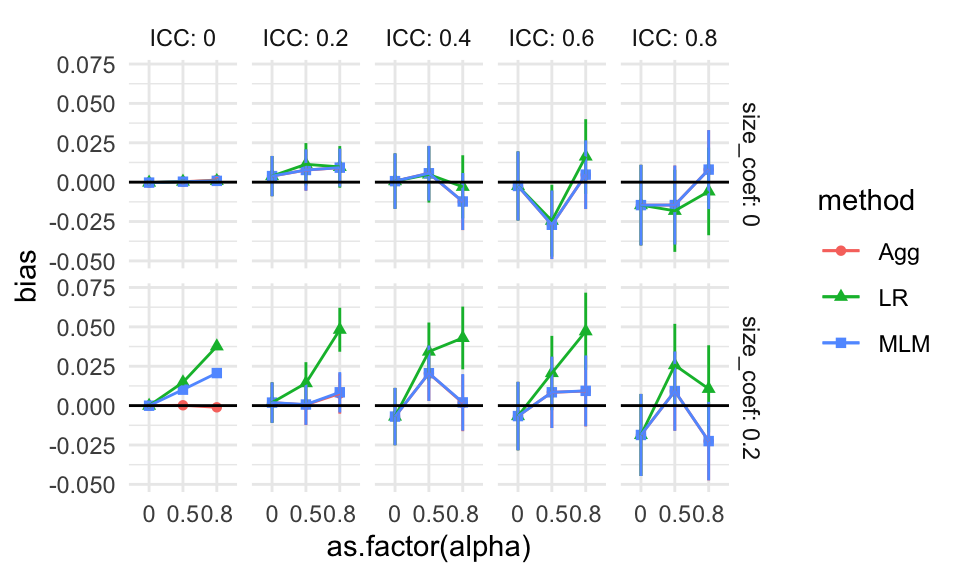
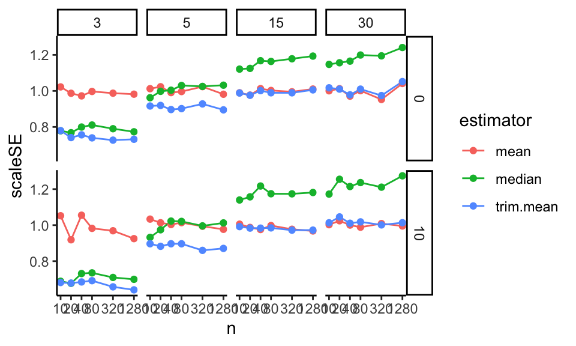
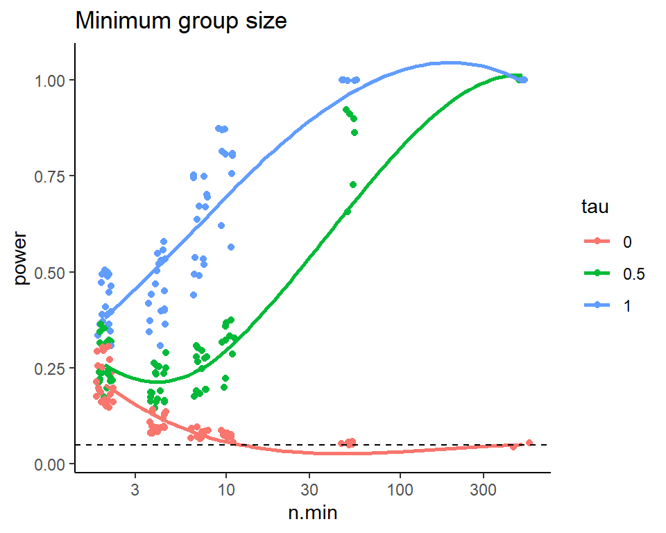
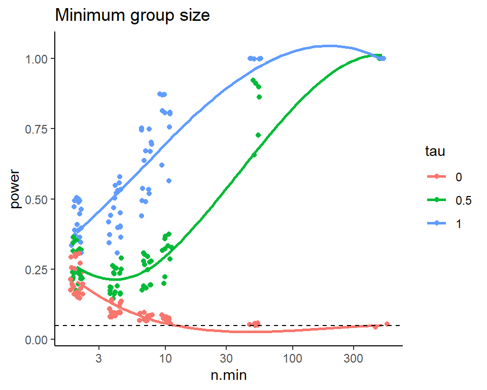

Chapter 12 Analyzing the multifactor experiment
12.1 Ways of analyzing simulation results
Once we have performance measures for all our simulation scenarios, how do we explore them? For our Cluster RCT simulation, we have 270 different simulation runs across our factors (with three rows per simulation run, one for each method). How can we visualize and understand trends across this complex domain?
There are several techniques for summarizing across the data that one might use.
12.1.1 Plot everything with many small multiples
If you do not have too many different kinds of factor, you can simply plot all of your results at once.
For example, say we only ran simulations for our Cluster RCT simulation with n_bar = 320 and J = 20.
Then we could plot everything like so:
sres_sub <- sres %>%
filter( n_bar == 320, J == 20 )
ggplot( sres_sub, aes( alpha, bias, col=method, pch=method, group=method ) ) +
facet_grid( size_coef ~ ICC, labeller = label_both ) +
geom_point() + geom_line() +
geom_hline( yintercept = 0 ) +
theme_minimal() +
scale_x_continuous( breaks = unique( sres$alpha) )
Each point is one of our methods in one of our simulation scenarios. We are looking at the raw results. We connect the points with lines to help us see trends within each of the mini-plots. It also helps us visually track which group of points goes with which.
As a side note, this style of plotting, with a bunch of small plots, is called “many small multiples” and is beloved by Tufte. He likes it, in part, because in a single plot we can display 5 variables: our facets are organized by two (ICC and the size coefficient), and within each facet we have three (alpha, our outcome of bias, and the methods themselves). Unfortunately, we quickly reach our limits of this approach if we have more factors than 5, which, in this case, we do. We next present bundling, a way of using this core idea of showing raw results, but in a semi-aggregated way.
12.1.2 Bundling
As a first step, we can bundle the simulations into groups defined by a selected primary factor of interest, and then plot each bundle with a boxplot of a selected performance criteria. Each boxplot then shows the central measure of how well an estimator worked across those simulations, along with a sense of how much that performance varied across those simulations. If the boxes are narrow, then we know that the variation across simulations within the box did not impact performance much. If the boxes are wide, then we know that the factors that vary within the box matter a lot for performance.
With bundling, we would need a good number of simulation runs per scenario, so that the MCSE in the performance measures does not make our boxplots look substantially more variable (wider) than the truth. (Consider a case where the simulations within a box all would have the same performance, but the MCSE is large; in this case we would see a wide boxplot when we should not.)
To illustrate, we next investigate bias in our running example on cluster RCTs. We are going to group our results by method, ICC, the size coefficent (how strong the cluster size to treatment impact relationship is), and alpha (how much the site sizes vary). For a specific ICC, size, and alpha, we will put the boxes for the three methods side-by-side to directly compare the methods in terms of bias.
ggplot( sres, aes( ICC, bias, col=method, group=paste0(ICC,method) ) ) +
facet_grid( alpha ~ size_coef, labeller = label_both ) +
geom_boxplot(coef = Inf) +
geom_hline( yintercept = 0 ) +
theme_minimal() +
scale_x_continuous( breaks = unique( sres$ICC) )
From our plot we see, for example, that there is virtually no bias for any method when the size coefficient is 0 and the ICC is 0. It is a bit more unclear, but it seems there is also virtually no bias when the size coefficient is 0 regardless of ICC, but the boxes are wider making us wonder if something else is potentially going on. When alpha is 0 and the size coefficient is 0.2, all methods have a negative bias for most scenarios considered, as all boxes and almost all of the whiskers are below the 0 line (when ICC is 0.6 or 0.8 we may have some instances of 0 or positive bias, if that is not MCSE giving long tails).
Each box is a collection of simulation trials. E.g., for ICC = 0.6, size_coef = 0.2, and alpha = 0.8 each box contains 9 scenarios representing the varying level 1 and level 2 sample sizes.
Here are the 9 for the Aggregation method:
filter( sres, ICC == 0.6, size_coef == 0.2,
alpha == 0.8, method=="Agg" ) %>%
dplyr::select( n_bar:alpha, bias )## # A tibble: 9 × 7
## n_bar J ATE size_coef ICC alpha bias
## <dbl> <dbl> <dbl> <dbl> <dbl> <dbl> <dbl>
## 1 20 5 0.2 0.2 0.6 0.8 -6.60e-2
## 2 20 20 0.2 0.2 0.6 0.8 1.68e-2
## 3 20 80 0.2 0.2 0.6 0.8 1.02e-2
## 4 80 5 0.2 0.2 0.6 0.8 2.09e-3
## 5 80 20 0.2 0.2 0.6 0.8 2.98e-2
## 6 80 80 0.2 0.2 0.6 0.8 -9.26e-3
## 7 320 5 0.2 0.2 0.6 0.8 2.42e-2
## 8 320 20 0.2 0.2 0.6 0.8 9.93e-4
## 9 320 80 0.2 0.2 0.6 0.8 1.97e-3The apparent outliers (long tails) for some of the boxplots suggest that the other factors (cluster size and number of clusters) also relate to degree of bias. We could try bundling along different aspects to see:
ggplot( sres, aes( as.factor(n_bar), bias, col=method, group=paste0(n_bar,method) ) ) +
facet_grid( alpha ~ size_coef, labeller = label_both ) +
geom_boxplot(coef = Inf) +
geom_hline( yintercept = 0 ) +
theme_minimal()
No progress there. Perhaps it is instability or MCSE. In an actual analysis, we might then make a note to investigate these anomalies a bit further, later on.
12.1.3 Aggregation
The boxplots make seeing trends more difficult. Instead of bundling, we can therefore aggregate, where we average all the scenarios within a box to get a single number of average performance, to look at overall trends rather than individual simulation variation. Aggregation is especially important if the number of replicates within each scenario is small, because then each indiviua scenario’s performance is measured with a lot of error.
With aggregation, we average over some of the factors, collapsing our simulation results down to fewer moving parts. Aggregation across factors is better than having not had those factors in the first place! A performance measure averaged over a factor is a more general answer of how things work in pratice than having not varied the factor at all.
For example, if we average across ICC and site variation, and see how the methods change performance as a function of \(J\), we would know that this is a general trend across a range of scenarios defined by different ICC and site variation levels. Our conclusions would then be more general than if we picked a single ICC and amount of site variation: in this latter case we would not know if we would see our trend more broadly.
Also, with aggregation, we can have a smaller number of replications per factor combination. The averaging will, in effect, give a lot more replications per aggregated performance measure.
A caution with aggregation is that aggregated results can be misleading if you have scaling issues or extreme outliers. With bias, our scale is fairly well set, so we are good. But if we were aggregating standard errors over different sample sizes, then the larger standard errors of the smaller sample size simulations (and the greater variability in estimating those standard errors) would swamp the standard errors of the larger sample sizes. Usually, with aggregation, we want to average over something we believe will not change massively over the marginalized-out factors. Alternatively, we can average over a relative measure (such as standard error divided by the standard error of some baseline method), which tend to be more invariant and comparable across scenarios.
For our cluster RCT, we might aggregate our bias across some of our simulation factors as follows:
ssres <-
sres %>%
group_by( ICC, method, alpha, size_coef ) %>%
summarise( bias = mean( bias ) )
ggplot( ssres, aes( ICC, bias, col=method ) ) +
facet_grid( alpha ~ size_coef, labeller = label_both ) +
geom_point( alpha=0.75 ) +
geom_line( alpha=0.75 ) +
geom_hline( yintercept = 0 ) +
theme_minimal()
We see more clearly that site variation leads to greater bias, but only if the coefficient for size is nonzero (which makes sense given our theoretical understanding of the problem–if size is not related to treatment effect, it is hard to imagine how it would bias it). We also see that all the estimators have near zero bias when thee is no variation in cluster size, with the overplotted lines on the top row of the figure.
We can also let ggplot aggregate directly by taking advantage of the smoothing options:
ggplot( sres, aes( ICC, bias, col=method ) ) +
facet_grid( alpha ~ size_coef, labeller = label_both ) +
geom_point( alpha=0.25,
position = position_dodge(width = 0.04) ) +
geom_smooth( se=FALSE ) +
geom_hline( yintercept = 0 ) +
theme_minimal()## `geom_smooth()` using method = 'loess' and
## formula = 'y ~ x'
In the above, we let the original points show as well, to give a sense of the variation across simulation trials.
12.1.4 Regression Summarization
One can treat the simulation results as a dataset in its own right. In this case we can regress a performance measure against the methods and various factor levels to get “main effects” of how the different levels impact performance, holding the other levels constant. This type of regression is called a “meta regression” (Kleijnen (1981),Friedman and Pressman (1988),Gilbert and Miratrix (2024)), as we are regressing on already processed results. It also has ties to meta analysis (see, e.g., Borenstein et al. (2021)), where we look for trends across sets of experiments.
In a meta regression, the main effect estimated for each method will tell us if a method is, on average, higher or lower than the baseline method, averaging across all the simulation scenarios. The main effect of the factors will tell us if that factor impacts the performance measure.
These regressions can also include interactions between method and factor, to see if some factors impact different methods differently. They can also include interactions between factors, which allows us to explore how the impact of a factor can matter more or less, depending on other aspects of the context.
For our cluster RCT, we might have, for example:
# Make our simulation factors factors rather tha numeric values
sres_f = sres %>%
mutate( across( c( n_bar, J, size_coef, ICC, alpha ), factor ) )
# Run the regression
M <- lm( bias ~ (n_bar + J + size_coef + ICC + alpha) * method,
data = sres_f )
# View the results
stargazer::stargazer(M, type = "text",
single.row = TRUE )##
## ==================================================
## Dependent variable:
## ---------------------------
## bias
## --------------------------------------------------
## n_bar80 -0.001 (0.006)
## n_bar320 0.003 (0.006)
## J20 -0.005 (0.006)
## J80 -0.006 (0.006)
## size_coef0.2 0.005 (0.005)
## ICC0.2 0.008 (0.008)
## ICC0.4 0.003 (0.008)
## ICC0.6 0.004 (0.008)
## ICC0.8 0.005 (0.008)
## alpha0.5 -0.003 (0.006)
## alpha0.8 0.006 (0.006)
## methodLR -0.014 (0.012)
## methodMLM 0.002 (0.012)
## n_bar80:methodLR 0.003 (0.009)
## n_bar320:methodLR 0.001 (0.009)
## n_bar80:methodMLM -0.0003 (0.009)
## n_bar320:methodMLM -0.001 (0.009)
## J20:methodLR 0.005 (0.009)
## J80:methodLR 0.006 (0.009)
## J20:methodMLM 0.001 (0.009)
## J80:methodMLM 0.001 (0.009)
## size_coef0.2:methodLR 0.018** (0.007)
## size_coef0.2:methodMLM 0.003 (0.007)
## ICC0.2:methodLR 0.002 (0.011)
## ICC0.4:methodLR 0.001 (0.011)
## ICC0.6:methodLR -0.0004 (0.011)
## ICC0.8:methodLR -0.0001 (0.011)
## ICC0.2:methodMLM -0.005 (0.011)
## ICC0.4:methodMLM -0.005 (0.011)
## ICC0.6:methodMLM -0.006 (0.011)
## ICC0.8:methodMLM -0.006 (0.011)
## alpha0.5:methodLR 0.006 (0.009)
## alpha0.8:methodLR 0.019** (0.009)
## alpha0.5:methodMLM 0.001 (0.009)
## alpha0.8:methodMLM 0.003 (0.009)
## Constant -0.002 (0.009)
## --------------------------------------------------
## Observations 810
## R2 0.075
## Adjusted R2 0.033
## Residual Std. Error 0.041 (df = 774)
## F Statistic 1.781*** (df = 35; 774)
## ==================================================
## Note: *p<0.1; **p<0.05; ***p<0.01We can quickly get a lot of features, making a meta-regression somewhat hard to interpret. But picking out the significant coefficents is a quick way to obtain a lot of clues as to what is driving performance. E.g., many features interact with the LR method for bias. The other two methods seem less impacted.
12.1.5 Focus on a subset, kick rest to supplement
Frequently researchers might simply filter the simulation results to a single factor level for some nuisance parameter. For example, we might examine ICC of 0.20 only, as this is a “reasonable” value that, given our substance matter knowledge, we know is frequently found in empirical data. We would then consider the other levels as a “sensitivity” analysis vaguely alluded to in our main report and placed elsewhere, such as an online supplemental appendix.
It would be our job, in this case, to verify that our reported findings on the main results indeed were echoed in our other, set-aside, simulation runs.
12.2 Analyzing results when some trials have failed
If methods fail, then this is something to investigate in its own right. Ideally, failure is not too common, so we can drop those trials, or keep them, without really impacting our overall results. But one should at least know what one is ignoring.
For example, in our cluster RCT, we know we have, at least sometimes, convergence issues. We also know that ICC is an important feature, so we can explore how often we get a convergence message by ICC level:
res %>%
group_by( method, ICC ) %>%
summarise( message = mean( message ) ) %>%
pivot_wider( names_from = "method", values_from="message" )## Warning: There were 15 warnings in `summarise()`.
## The first warning was:
## ℹ In argument: `message = mean(message)`.
## ℹ In group 1: `method = "Agg"` `ICC = 0`.
## Caused by warning in `mean.default()`:
## ! argument is not numeric or logical: returning NA
## ℹ Run `dplyr::last_dplyr_warnings()` to see the
## 14 remaining warnings.## # A tibble: 5 × 4
## ICC Agg LR MLM
## <dbl> <dbl> <dbl> <dbl>
## 1 0 NA NA NA
## 2 0.2 NA NA NA
## 3 0.4 NA NA NA
## 4 0.6 NA NA NA
## 5 0.8 NA NA NAWe see that when the ICC is 0 we get a lot of convergence issues, but as soon as we pull away from 0 it drops off considerably. At this point we might decide to drop those runs with a message or keep them. In this case, we decide to keep. It shouldn’t matter much in any case except the ICC = 0 case, and we know the convergence issues are driven by trying to estimate a 0 variance, and thus is in some sense expected. Furthermore, we know people using these methods would likely ignore these messages, and thus we are faithfully capturing how these methods would be used in practice. We might eventually, however, want to do a separate analysis of the ICC = 0 context to see if the MLM approach is actually falling apart, or if it is just throwing warnings.
12.3 Case study: power for a randomized trial
We next walk through a case study where we compare different visualizations of the same performance metric (in this case, power). The goal is to see how to examine a metric from several perspectives, and to see how to explore simulation results across scenarios.
For this example, we are going to look at a randomized experiment. We will generate control potential outcomes with a normal distribution, and then add a treatment effect to the treated units.
For our analytic approach, we will estimate the treatment effect by taking the difference in means. We will calculate the associated standard error and generate \(p\)-values using the normal approximation. (As we will see, this is not a good idea for small sample sizes since we should be using a \(t\)-test style approach.)
Violating our usual modular approach, we are going to have a single function that does an entire step: our function will generate the data and then analyze it all in one go. Our function also calculates and returns the true effect size of the DGP as the true treatment effect divided by the control standard deviation (this true effect size will be useful for understanding power, as we show later on).
run.one = function( nC, nT, sdC, tau, mu = 5, sdTau = 0 ) {
Y0 = mu + rnorm( nC, sd=sdC )
Y1 = mu + rnorm( nT, sd=sdC ) + tau + rnorm( nT, sd=sdTau )
tau.hat = mean( Y1 ) - mean( Y0 )
SE.hat = sqrt( var( Y0 ) / ( nC ) + var( Y1 ) / ( nT ) )
z = tau.hat / SE.hat
pv = 2 * (1 - pnorm( abs( z ) ))
data.frame( tau.hat = tau.hat, SE.hat = SE.hat,
z = z, p.value = pv )
}Our function generates a data set, analyzes it, and give us back a variety of results as a one-row dataframe, as per usual:
## tau.hat SE.hat z p.value
## 1 -0.246767 0.6607213 -0.3734812 0.7087903In this case, our results are a mix of the parameters and estimated quantities.
We then write a function that runs our single trial multiple times and summarizes the results:
run.experiment = function( nC, nT, sdC, tau, mu = 5, sdTau = 0, R = 500 ) {
eres = replicate( R,
run.one( nC, nT, sdC, tau, sdTau=sdTau, mu=mu ),
simplify=FALSE ) %>%
bind_rows()
eres %>%
summarise( E.tau.hat = mean( tau.hat ),
E.SE.hat = mean( SE.hat ),
power = mean( p.value <= 0.05 ) ) %>%
mutate( nC=nC, nT=nT, sdC=sdC, tau=tau, mu=mu, sdTau=sdTau, R=R )
}For performance, we have the average average treatment effect estimate E.tau.hat,
the average Standard Error estimate E.SE.hat,
and the power power (defined as the percent of time we reject at
alpha=0.05, i.e., the percent of times our \(p\)-value was less than our 0.05
threshold):
Our function also adds in the details of the simulation (the parameters we passed
to the run.one() call). This is an easy way to keep track of things.
We test our function to see what we get:
## E.tau.hat E.SE.hat power nC nT sdC tau mu
## 1 0.497077 0.6284977 0.218 10 3 1 0.5 5
## sdTau R
## 1 0.2 500We next use the above to run our multi-factor simulation experiment. We are going to vary four factors: control group size, treatment group size, standard deviation of the units, and the treatment effect.
nC = c( 2, 4, 7, 10, 50, 500 )
nT = c( 2, 4, 7, 10, 50, 500 )
sdC = c( 1 )
tau = c( 0, 0.5, 1 )
sdTau = c( 0, 0.5 )
experiments = expand_grid( nC=nC, nT=nT, sdC=sdC, tau=tau, sdTau = sdTau )
experiments## # A tibble: 216 × 5
## nC nT sdC tau sdTau
## <dbl> <dbl> <dbl> <dbl> <dbl>
## 1 2 2 1 0 0
## 2 2 2 1 0 0.5
## 3 2 2 1 0.5 0
## 4 2 2 1 0.5 0.5
## 5 2 2 1 1 0
## 6 2 2 1 1 0.5
## 7 2 4 1 0 0
## 8 2 4 1 0 0.5
## 9 2 4 1 0.5 0
## 10 2 4 1 0.5 0.5
## # ℹ 206 more rowsWe next run an experiment for each row of our dataframe of experiment factor combinations, and save the results.
exp.res <- experiments %>%
pmap_df( run.experiment, R=2000 )
dir.create("results", showWarnings = FALSE )
saveRDS( exp.res, file="results/Neyman_RCT_results.rds" )The R=2000 after run.experiment passes the same parameter of \(R=2000\) to each
run (we run the same number of trials for each experiment).
We can put it there rather than have it be a column in our list of factors to run.
Here is a peek at our results:
## E.tau.hat E.SE.hat power nC nT sdC tau mu
## 1 -0.001525155 0.8818917 0.1975 2 2 1 0.0 5
## 2 -0.026286662 0.9307269 0.1915 2 2 1 0.0 5
## 3 0.485430674 0.8861287 0.2185 2 2 1 0.5 5
## 4 0.452375661 0.9363909 0.2095 2 2 1 0.5 5
## 5 1.029038283 0.8915091 0.3120 2 2 1 1.0 5
## 6 0.957434064 0.9347139 0.3025 2 2 1 1.0 5
## sdTau R
## 1 0.0 2000
## 2 0.5 2000
## 3 0.0 2000
## 4 0.5 2000
## 5 0.0 2000
## 6 0.5 200012.3.1 The initial analysis
We are ready to analyze, and we start with plotting.
Plotting is always a good way to visualize simulation results.
We first make our tau into a factor, so ggplot behaves, and then plot all our
experiments as two rows based on one factor (sdTau) with the columns being
another (nT).
Unlike our Cluster RCT, we only have one method, so we can use our color for a different simulation factor.
Within each plot we have the x-axis for one factor (nC) and multiple lines for the final factor (tau).
The \(y\)-axis is our outcome of interest, power. We add a 0.05 line to show
when we are rejecting at rates above our nominal \(\alpha\). This plot shows
the relationship of five variables.
exp.res = exp.res %>%
mutate( tau = as.factor( tau ) )
ggplot( exp.res, aes( x=nC, y=power, group=tau, col=tau ) ) +
facet_grid( sdTau ~ nT, labeller=label_both ) +
geom_point() + geom_line() +
scale_x_log10() +
geom_hline( yintercept=0.05, col="black", lty=2)
We are looking at power for different control and treatment group sizes. The tau is our treatment effect, and so for \(\tau = 0\) we are looking at validity (false rejection of the null) and for the other \(\tau\) power (noticing an effect when it is there). Notice that we are seeing elevated rejection rates (the tau=0 line is well above 0.05) under the null for small and even moderate sample sizes!
12.3.2 Focusing on validity
Especially when considering power, we might want to separate rejection rates under the null vs. rejection rates when there is a true thing to reject. In particular, we can subset to specific simulation runs with no treatment impact to assess the validity.
First, we can filter our simulations to large samples to make sure we are seeing rejection rates (power) of around 0.05, which is what we want:
| E.tau.hat | E.SE.hat | power | nC | nT | sdC | tau | mu | sdTau | R |
|---|---|---|---|---|---|---|---|---|---|
| 0 | 0.20 | 0.06 | 50 | 50 | 1 | 0 | 5 | 0.0 | 2000 |
| 0 | 0.21 | 0.05 | 50 | 50 | 1 | 0 | 5 | 0.5 | 2000 |
| 0 | 0.15 | 0.06 | 50 | 500 | 1 | 0 | 5 | 0.0 | 2000 |
| 0 | 0.15 | 0.05 | 50 | 500 | 1 | 0 | 5 | 0.5 | 2000 |
| 0 | 0.15 | 0.05 | 500 | 50 | 1 | 0 | 5 | 0.0 | 2000 |
| 0 | 0.16 | 0.06 | 500 | 50 | 1 | 0 | 5 | 0.5 | 2000 |
| 0 | 0.06 | 0.04 | 500 | 500 | 1 | 0 | 5 | 0.0 | 2000 |
| 0 | 0.07 | 0.06 | 500 | 500 | 1 | 0 | 5 | 0.5 | 2000 |
This does check out, which is a nice sanity check that we have implemented everything correctly. It is ok to use simulation of simple, known, cases to check that our methods are implemented correctly and working as expected.
We can then get fancy and look at false rejection rate (power under tau = 0) as a
function of both nC and nT using an interaction-style plot where we average over the other variables:
exp.res.rej <- exp.res %>%
filter( tau == 0 ) %>%
group_by( nC, nT ) %>%
summarize( power = mean( power ),
n = n() )
exp.res.rej = mutate( exp.res.rej, power = round( power * 100 ) )
ggplot( exp.res.rej, aes( x=nC, y=power, group=nT, col=as.numeric(as.factor(nT)) ) ) +
geom_point() + geom_line( size=0.5 ) +
geom_hline( yintercept = 5 ) +
scale_y_continuous( limits = c( 0, 40 ) ) +
scale_x_log10( breaks = unique( exp.res.rej$nC ) ) +
scale_color_gradient( low = "black", high="red",
labels = unique( exp.res.rej$nT ) ) +
labs( x = "# C", y = "Power", colour = "# T" )
This plot focuses on the validity of our test. It shows that we can have massively elevated rates when either the number of treated or control units is small (below 7). It also shows that as the size of one group increases, if the other is small our rejection rates climb! Note how for 4 control units, the \(n_T = 500\) line is above the others (except for the \(n_T = 2\) line).
12.3.3 Aggregate to look at main effects
We can ignore all the other factors while we look at one specific factor of interest. This is looking at the main effect or marginal effect of the factor.
The easy way to do this is to aggregate, letting ggplot smooth our individual points on a
plot.
Be sure to also plot the individual points to see variation, however.
ggplot( exp.res, aes( x=nC, y=power, group=tau, col=tau ) ) +
geom_jitter( width=0.02, height=0, alpha=0.5 ) +
geom_smooth( se = FALSE ) +
scale_x_log10( breaks=nC) +
geom_hline( yintercept=0.05, col="black", lty=2)
Note how we see our individual runs that we marginalize over as the dots.
To look at our main effects we can also summarize our results, averaging our experimental runs across other factor levels. For example, in the code below we average over the different treatment group sizes and standard deviations, and plot the marginalized results.
To marginalize, we group by the things we want to keep and let summarise()
average over the things we want to get rid of.
exp.res.sum = exp.res %>% group_by( nC, tau ) %>%
summarise( power = mean( power ) )
head( exp.res.sum )## # A tibble: 6 × 3
## # Groups: nC [2]
## nC tau power
## <dbl> <fct> <dbl>
## 1 2 0 0.205
## 2 2 0.5 0.254
## 3 2 1 0.395
## 4 4 0 0.114
## 5 4 0.5 0.204
## 6 4 1 0.427ggplot( exp.res.sum, aes( x=nC, y=power, group=tau, col=tau ) ) +
geom_line() + geom_point() +
scale_x_log10( breaks=nC) +
geom_hline( yintercept=0.05, col="black", lty=2)
We can try to get clever and look at other aspects of our experimental runs. The above suggests that the smaller of the two groups is dictating when things going awry, in terms of elevated rejection rates under the null.
We can also look at our results in terms of some more easily interpretable parameters, such as effect size instead of raw treatment effect.
To try and simplify the story, we can try and look at total sample size and the smaller of the two groups sample size and make two different plots that way.
ggplot( exp.res, aes( x=n, y=power, group=tau, col=tau ) ) +
geom_jitter( width=0.05, height=0) +
geom_smooth( se = FALSE, span = 1) +
scale_x_log10() +
geom_hline( yintercept=0.05, col="black", lty=2) +
labs( title = "Total sample size" )
ggplot( exp.res, aes( x=n.min, y=power, group=tau, col=tau ) ) +
geom_jitter( width=0.05, height=0) +
geom_smooth( se = FALSE, span = 1) +
scale_x_log10() +
geom_hline( yintercept=0.05, col="black", lty=2) +
labs( title = "Minimum group size" ) 

Figure 12.1: Power as a function of total sample size.
Note the few observations out in the high n.min region for the second
plot—this plot is a bit strange in that the different levels along the
x-axis are assymetric with respect to each other. It is not balanced.
12.3.4 Recap
Overall, this exploration demonstrates the process of looking at a single performance metric (power) and refining a series of plots to get a sense of what the simulation is taking us. There are many different plots we might choose, and this depends on the messages we are trying to convey.
The key is to explore, and see what you can learn!